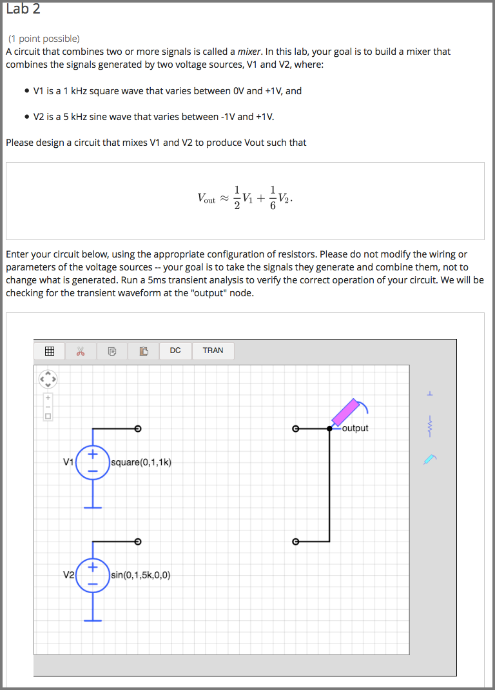

11.4. Circuit Schematic Builder Problem#
Note
EdX does not support this problem type.
In circuit schematic builder problems, students can arrange circuit elements such as voltage sources, capacitors, resistors, and MOSFETs on an interactive grid. They then submit a DC, AC, or transient analysis of their circuit to the system for grading.
{kind=link}
11.4.1. Create a Circuit Schematic Builder Problem#
In the unit where you want to create the problem, under Add New Component select Problem.
In the problem editor, select Advanced problem types. Then select Circuit Schematic Builder.
In the advanced problem editor, replace the example code with your own code.
Select Save.
Problem Code
The illustration above shows a condensed version of an actual problem from MITx’s 6.002.1x. To create the entire problem, paste the following code into the advanced editor.
<problem>
<p>A circuit that combines two or more signals is called a <i>mixer</i>. In
this lab, your goal is to build a mixer that combines the signals generated
by two voltage sources, V1 and V2, where:</p>
<ul style="margin-left:2em;">
<li>
<p>V1 is a 1 kHz square wave that varies between 0V and +1V, and</p>
</li>
<li>
<p>V2 is a 5 kHz sine wave that varies between -1V and +1V.</p>
</li>
</ul>
<p>Please design a circuit that mixes V1 and V2 to produce Vout such that</p>
<center>\[V_\mathrm{out} \approx \frac{1}{2}V_1 + \frac{1}{6}V_2.\]</center>
<p>The resulting output should be similar to that shown in Figure 1. The
maximum value of the output is approximately \(667mV\) and the minimum value
is approximately \(-167mV\).</p>
<center><img src="/static/images/circuits/Lab2B_1.png"/><br/>Figure 1. Desired output waveform</center>
<p>Hint: Figure 2 shows a simple resistive mixer for combining two signals.</p>
<center><img src="/static/images/circuits/Lab2B_2.png"/><br/>Figure 2. Simple resistive mixer</center>
<p>Enter your circuit below, using the appropriate configuration of
resistors. Please do not modify the wiring or parameters of the voltage
sources -- your goal is to take the signals they generate and combine them,
not to change what is generated. Run a 5ms transient analysis to verify the
correct operation of your circuit. We will be checking for the transient
waveform at the "output" node.</p>
<schematicresponse>
<center>
<schematic height="500" width="650" parts="g,r,s" analyses="dc,tran" submit_analyses="{"tran":[["output",0.00025,0.00035,0.00065,0.00075]]}" initial_value="[["v",[56,48,0],{"name":"V1","value":"square(0,1,1k)","_json_":0},["2","0"]],["g",[56,96,0],{"_json_":1},["0"]],["v",[56,128,0],{"name":"V2","value":"sin(0,1,5k,0,0)","_json_":2},["1","0"]],["g",[56,176,0],{"_json_":3},["0"]],["w",[56,48,88,48]],["w",[56,128,88,128]],["L",[224,48,3],{"label":"output","_json_":6},["output"]],["w",[224,48,200,48]],["w",[224,48,224,128]],["w",[224,128,200,128]],["s",[224,48,0],{"color":"magenta","_json_":10},["output"]],["view",0,0,2,"5","10","10MEG",null,"100","5ms"]]"/>
</center>
<answer type="loncapa/python">
# for a schematic response, submission[i] is the json representation
# of the diagram and analysis results for the i-th schematic tag
def get_tran(json,signal):
for element in json:
if element[0] == 'transient':
return element[1].get(signal,[])
return []
output = get_tran(submission[0],'output')
answer = [[0.00025, 0.666],
[0.00035, 0.333],
[0.00065, 0.166],
[0.00075, -0.166]]
okay = True
if not output or output[0][1] == 'undefined': # No transient or output node floating
okay = False
else:
for (at,av) in answer:
for (t,v) in output:
if at==t and abs(av - v) < 0.05*abs(av):
# found a good match for this answer, on to the next one
break
else:
print 'check',at,av
# no submission matched answer, complain
okay = False;
break;
correct = ['correct' if okay else 'incorrect']
</answer>
</schematicresponse>
<p>When you're done or if you wish to save your work, please click CHECK.
The checker will be verifying the voltage of the output node at several
different times, so you'll earn a point only <i>after</i> you've performed
the transient simulation so that the checker will have a waveform to check!</p>
<solution>
<div class="detailed-solution"><p>Explanation:</p>
<p>The goal is to design a mixer circuit with characteristics of
\(V_{out}=\frac{1}{2}\cdot V_1+\frac{1}{6}\cdot V_2\)
You might have started to design your mixer with two resistors only as the example suggests.
But working through the math, soon you'll realize that the equations return no non-zero value for the resistor components.
Thus you have to change the design. The next simplest design will be to add a resistor \(R_3\) that connects the node Vout to ground.
See the schematic below:</p>
<img src="/static/images/circuits/lab2fmt.png"/>
<p>Since we are going to use only linear elements in this circuit
(resistors are linear), superposition will hold
and thus one can look at the effect of each source \(V_1\) and \(V_2\)
one at the time:</p>
[mathjax] V_{out1} = V_1 \cdot \frac{\left(R_2 \parallel R_3\right)}
{\left(R_2 \parallel R_3+R_1\right)}\\ V_{out2} = V_2 \cdot
\frac{\left(R_1 \parallel R_3\right)}{\left(R_1 \parallel R_3+R_2\right)}
\\ V_{out} = V_{out 1} + V_{out 2} \\ V_{out} = V_1 \cdot
\frac{\left(R_2 \parallel R_3\right)}{\left(R_2\parallel R_3+R_1\right)} +
V_2 \cdot \frac{\left(R_1 \parallel R_3\right)}{\left(R_1 \parallel R_3 +
R_2\right)} = \frac{1}{2} \cdot V_1+\frac{1}{6} \cdot V_2 [/mathjax]
<p>Therefore:</p>
[mathjax] \frac{ \left(R_2 \parallel R_3 \right) }
{ \left( R_2 \parallel R_3 + R_1 \right)} =
\frac{1}{2} \\\frac{\left( R_1 \parallel R_3 \right) }
{ \left(R_1 \parallel R_3 + R_2 \right)} = \frac{1}{6} [/mathjax]
<p>So we have to solve for the resistors given these two equations. You
might notice that we have 2 equations and 3 unknowns, and that there is
therefore not a unique solution. That is okay, though. We only have to
worry if there is no solution, not if there are too many solutions. We will
simply find one of the many possible correct answers by arbitrarily
choosing a value for one of the variables later.</p>
<p>The first equation simplifies to \( R_1 = R_2\parallel R_3\) and the
second simplifies to \(R_2 = 5 \cdot R_1\parallel R_3\)
Expanding the notation gives: </p>
[mathjax]\frac{1}{R_1}=\frac{1}{R_2}+\frac{1}{R_3}
\tag{*} \\\frac{1}{R_1}+\frac{1}{R_3}=\frac{5}{R_2} [/mathjax]
<p>Subtracting these two equations will yield \(R_2 = 2 \cdot R_3\)
And putting this back to the starred equation , will result in
\(R_1 = \frac{2}{3} \cdot R_3\)
So now we have \(R_2\) and \(R_1\) in terms of \(R_3\) with the following
ratios:</p>
[mathjax]R_2 = 2 \cdot R_3 \\ R_1 = \frac{2}{3} \cdot R_3 \\[/mathjax]
<p>Since the design hadn't mentioned anything about the resistances, one can
use a simple value of \(R_3= 3Ω\) and find the rest accordingly:</p>
[mathjax]R_1= 2Ω \\
R_2= 6Ω \\
R_3= 3Ω \\
[/mathjax]
<p>With these resistor values, doing a transient analysis shows a result which meets the required specs of \(V_{out}\).</p>
</div>
</solution>
</problem>